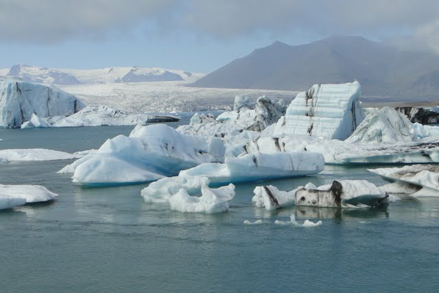
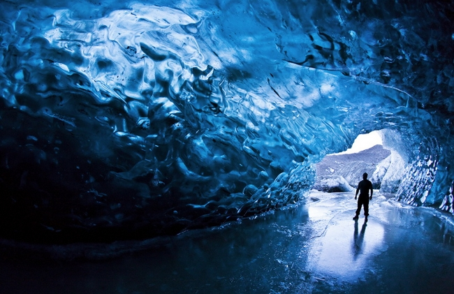
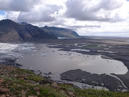
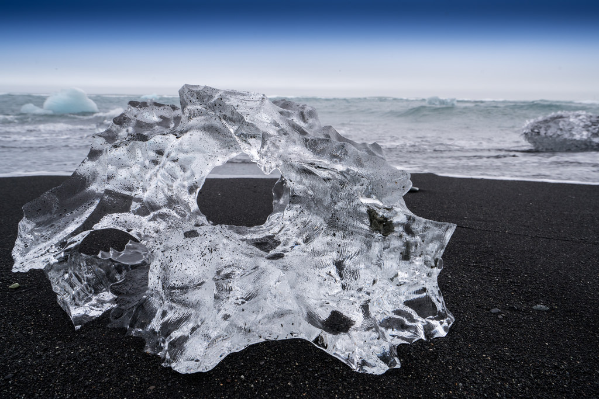

Take an exclusive boat tour around the Ice Lagoon Jokulsarlon

The vast Ice Lagoon, in which you can take an exclusive boating tour!
Ice Cave Tour by Vatnajokull Glacier-
Take an exclusive tour into a natural blue ice cave, leaving from the Lagoon in Jokulsarlon, and traveling to the cave in the south-east of Iceland.

An amazing shot of the inside of a natural blue cave!
Visit any of the 3 national parks in Iceland
The closets being Skaftafell, a wilderness area in Iceland's Vatnajokull National Park

The beautiful landscape of Skaftafell National Park
Visit Diamond Beach
This is a 2 day trip at Jokulsarlon glacier lagoon and explore the highlights of the south coast.

Ice diamonds found right on beach!
Real Reviews from Our Most Recent Guests!
Skaftafell National Park is a beautiful park with lots of trails to choose from! Fantastic vistas if you take the time to climb.(5 stars)-Sarah Brown
The Ice Lagoon is a sight like nothing else. It was a sight most people don't ever get to see. In any case sailing through the icebergs is amazing and totally worth it!(5 stars)-Selena Gomez
The Ice Cave Tour by Vatnajokull Glacier was an outstanding place to visit. Cave is small so you want to be the first visitors or the last.(4.5 stars)-Steve Brown
Diamond Beach is one of the best things to see in Iceland. Amazing!(4.5 stars)-Kristin Lynch